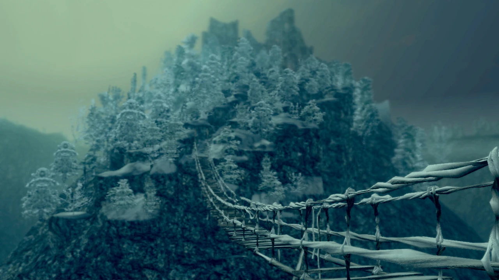

- Anor Londo
La joya arquitectónica del juego. Majestuosa y deslumbrante, Anor Londo representa la cima de la civilización perdida.
Su belleza esconde una tristeza infinita: dioses falsos, ilusiones y decadencia.
Es una de las zonas más recordadas por su diseño y su inolvidable combate contra Ornstein y Smough.

- Undead Burg
La primera zona real del juego, donde el jugador aprende las bases del combate y la exploración.
Es un ejemplo perfecto de cómo enseñar sin tutoriales, con un diseño que entrelaza caminos, atajos y trampas.
El encuentro con el demonio Tauro es uno de los primeros grandes momentos de tensión.

- Painted World of Ariamis
Un mundo oculto dentro de un cuadro, lleno de misterio y melancolía.
Su atmósfera nevada y su aislamiento le dan un aire poético.
Cada enemigo parece un recuerdo olvidado, y el enfrentamiento final con Priscilla es tan triste como hermoso.
